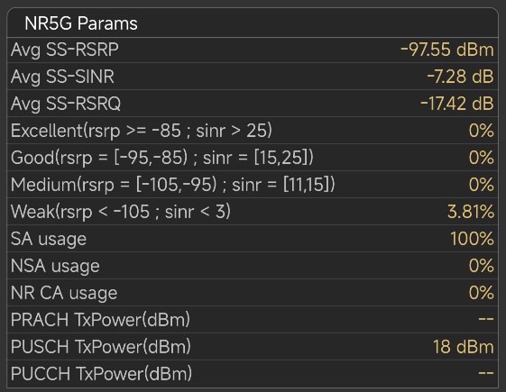

Signal Quality
Level Configuration
Currently only support
"rsrp","rsrg","sinr,"rxlev","rscp","ecio","rxpower" parameters.
the conditions include ">= " ,
"<= " , ">" , "<", "=".
Samples:
●
"rsrp = [-95,-85); sinr = [15,25]" means "rsrp >= -95 and rsrp
< -85 and sinr >= 15 and sinr <= 25".
●
"rsrp < -115; sinr < 3" means "rsrp < -115 and sinr
< 3 "
Currently, only a combination analysis
of up to 2 parameters is supported.such as ,rsrp and rsrq,rsrp and
sinr.
separate two sets of values with
semicolons,incorrect input can lead to analysis failure.
Users can edit, modify, delete, and add
custom conditions by themselves.
After the operation
(edit,add,modify) is executed, you
need to click save button.
When the testing task is completed, the
statistical values of these parameters will appear in the KPI
results
